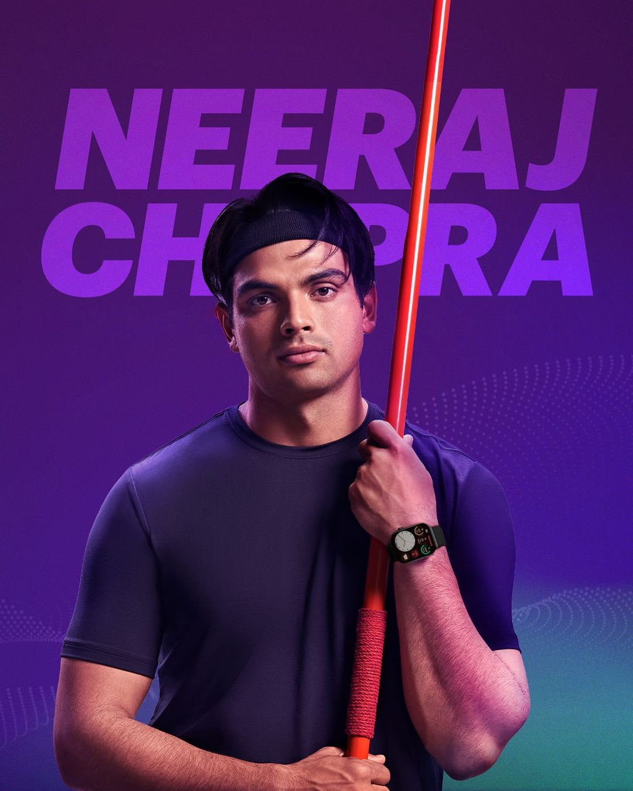
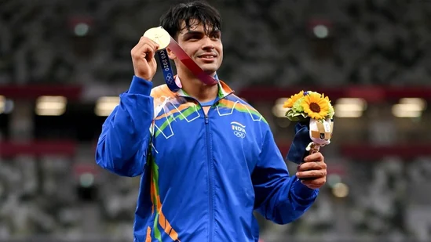

Neeraj Chopra
Golden arm, golden heart
Neeraj Chopra Makes History, Wins Gold in Javelin Throw at Tokyo Olympics
- Neeraj Chopra won the gold medal in the men's javelin throw at the Tokyo Olympics on August 7, 2021.
- He became the first Indian athlete to win an Olympic gold medal in athletics, and the first Indian to win an individual Olympic gold medal outside of shooting.
- Chopra's victory was a historic moment for Indian sports, and it inspired millions of Indians.
- It was also a sign of the country's growing prowess in athletics, and it showed that Indian athletes can compete at the highest level in any sport, given the right training and support.
- Chopra's victory is an inspiration to all Indians, and it shows that anything is possible if you set your mind to it and work hard.

 Niraj's Twitter
Niraj's Twitter